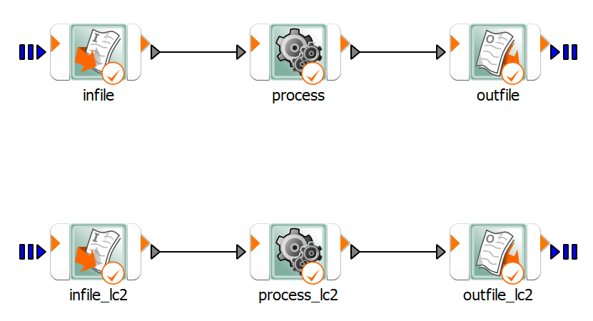

Note
Go to the end to download the full example code
Ten bar truss#
This example demonstrates the evaluation of designs.
It uses the evaluate_design() method at the
root level of a project.
First, a reference design is obtained and then cross section areas are decreased in each iteration to minimize mass, while satisfying defined constraints of maximum stress for two loading conditions.
The example project has been prepared in a certain way to support the “Design evaluation” use case:
Workflow components have been created at the root system level.
Parameters and responses have been registered at the root system level.
Proper workflow components have been connected to the root system using Receive designs and Send back designs options.
For more information, see the optiSLang user documentation on generating workflows.
This image shows the workflow:
- Workflow:
- 
{kind=link}
Perform required imports#
Perform the required imports.
from pathlib import Path
import tempfile
import matplotlib.pyplot as plt
from ansys.optislang.core import Optislang
import ansys.optislang.core.examples as examples
Create optiSLang instance#
Create the optiSLang instance.
example_path = examples.get_files("ten_bar_truss")[1][0]
tmp_dir = Path(tempfile.mkdtemp())
file_path = tmp_dir / "evaluate_design_example.opf"
osl = Optislang(project_path=example_path)
osl.save_as(file_path)
print(osl.get_working_dir())
Evaluate reference design#
Get the reference design, evaluate it, and extract the results.
rs = osl.project.root_system
parameters_count = len(rs.parameter_manager.get_parameters_names())
try_decrease_param = [True for i in range(parameters_count)]
successfull_designs = []
unsuccessfull_designs = []
design = rs.get_reference_design()
rs.evaluate_design(design)
if design.feasibility:
successfull_designs.append(design)
else:
raise ValueError("Constraints not satisfied for reference design, do not start example.")
objectives = {obj.name: obj.value for obj in design.objectives}
responses = {resp.name: resp.value for resp in design.responses}
plot_mass_successfull = [(1, objectives["obj"])]
plot_mass_unsuccessfull = []
plot_max_stress_lc1 = [abs(max(responses["stress"], key=abs))]
plot_max_stress_lc2 = [abs(max(responses["stress_lc2"], key=abs))]
Decrease cross section areas#
Copy the last successful design and gradually decrease cross section areas of each truss, storing the results. If decreasing a cross sectional area leads to violation of constraints, stop decreasing it.
design_count = 1
while True in try_decrease_param:
for j in range(parameters_count):
if not try_decrease_param[j]:
continue
design_count += 1
design = successfull_designs[-1].copy_unevaluated_design()
parameters = design.parameters
parameter_value = parameters[j].value
if parameter_value > 1:
parameters[j].value = parameter_value - 1
else:
try_decrease_param[j] = False
continue
rs.evaluate_design(design)
if design.feasibility:
successfull_designs.append(design)
objectives = {obj.name: obj.value for obj in design.objectives}
responses = {resp.name: resp.value for resp in design.responses}
plot_mass_successfull.append((design_count, objectives["obj"]))
else:
unsuccessfull_designs.append(design)
objectives = {obj.name: obj.value for obj in design.objectives}
responses = {resp.name: resp.value for resp in design.responses}
try_decrease_param[j] = False
plot_mass_unsuccessfull.append((design_count, objectives["obj"]))
plot_max_stress_lc1.append(abs(max(responses["stress"], key=abs)))
plot_max_stress_lc2.append(abs(max(responses["stress_lc2"], key=abs)))
Extract cross sectional areas#
From the last successful design, extract cross sectional areas, objective, and constraints.
best_design = successfull_designs[-1]
print("*-----------BEST-DESIGN-PARAMETERS-------------*")
for parameter in best_design.parameters:
print(parameter.name, parameter.value)
print("*-----------BEST-DESIGN-OBJECTIVE-------------*")
for objective in best_design.objectives:
print(objective.name, objective.value)
Stop and cancel project#
Stop and cancel the project.
osl.dispose()
Plot extracted results#
Plot the extracted results.
fig, axs = plt.subplots(2)
fig.suptitle("Optimization of ten bar truss cross section areas")
s1 = axs[0].scatter(
[xy[0] for xy in plot_mass_successfull],
[xy[1] for xy in plot_mass_successfull],
color="g",
label="successful",
)
s2 = axs[0].scatter(
[xy[0] for xy in plot_mass_unsuccessfull],
[xy[1] for xy in plot_mass_unsuccessfull],
color="r",
label="unsuccessful",
)
axs[0].set_ylabel("mass")
axs[0].legend()
(l1,) = axs[1].plot(range(1, design_count + 1), plot_max_stress_lc1, color="b", label="lc1")
axs[1].hlines(y=25000, xmin=1, xmax=design_count, color="b", linestyles="--")
(l2,) = axs[1].plot(range(1, design_count + 1), plot_max_stress_lc2, color="c", label="lc2")
axs[1].hlines(y=35000, xmin=1, xmax=design_count, color="c", linestyles="--")
axs[1].set_xlabel("design ID")
axs[1].set_ylabel("max stress")
axs[1].legend(handles=[l1, l2])
plt.show()